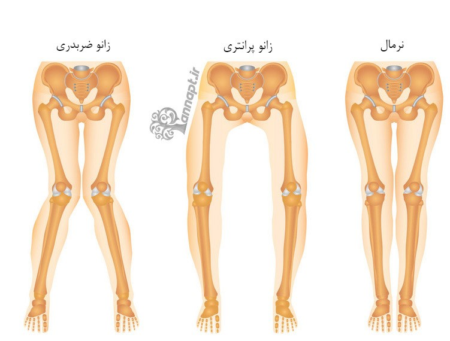

سوال 2: از کجا بدانیم که انحراف زانوهای ما نیازمند عمل است؟
پزشک با دریافت شرح حال بیمار (از جمله درد، سن و ..) و بررسی گزارشهای الاینمنت ویو، ام آر آی و سی تی اسکن، در این مورد تصمیم گیری میکند.

زانوی ضربدری، به اختلالی گفته می شود که در آن زانو ها در تماس با یکدیگر هستند ولی ساق پاها کاملا با هم فاصله دارند. زانوی پرانتزی به اختلالی گفته می شود که در آن مچ پاها با هم در تماس بوده ولی زانوها کاملا از یکدیگر فاصله دارند.
پزشک با دریافت شرح حال بیمار (از جمله درد، سن و ..) و بررسی گزارشهای الاینمنت ویو، ام آر آی و سی تی اسکن، در این مورد تصمیم گیری میکند.
mLDFA:
زاویه مکانیکی جانبی انتهایی ران (ران رو از بالا حساب میکنند، انتهاش میشه در محل سر زانو، جانبی هم میشه بیرونی). بیش از ۸۷.۵ پرانتزی. کمتر از ۸۷.۵ ضربدری. محدوده نرمال ۸۵-۹۰
mMPTA:
زاویه مکانیکی میانی نزدیک ساق (ساق رو هم از بالا حساب میکنند، نزدیک میشه همون بالاش در محل سر زانو، میانی هم میشه داخلی). محدوده نرمالش مثل ران ۸۵-۹۰. ولی بر عکس ران، زاویه هر چی کمتر پرانتزی تر، هر چه بیشتر ضربدری تر
mLDTA:
زاویه مکانیکی جانبی انتهایی ساق (انتهای ساق میشه پائین ساق روی مچ، جانبی هم بیرونی). محدوده نرمال بین ۸۶-۹۲. زاویه هر چی کمتر پرانتزی تر، هر چه بیشتر ضربدری تر
mFTA:
زاویه بین راستای مکانیکی ران و راستای مکانیکی ساق. معمولا درجات تقریبی انحراف رو برای سادگی از روی این اعداد میخونن ولی دقیق نیست.
IMa:
زاویه بین قوزکی: محدوده نرمال ۵-۷. کمتر از ۵ پرانتزی، بیشتر از ۷ ضربدری. از این زاویه استفاده چندانی نمیشه
CPA:
زاویه سطح کاندیلی، زاویه بین سطح انتهای ران و سطح ابتدای ساق از روبرو که محدوده نرمالش ۰-۲. بهش JLCA یا زاویه همگرایی خطوط مفصل هم میگن
مخفف کلمات:
m (mechanical): مکانیکی
L (Lateral): جانبی
D (Distal): انتهایی
F (Femoral): رانی
A (Angle): زاویه
M (Medial): میانی
P (Proximal): پهلویی/نزدیک
T (Tibial): ساقی
IM (InterMalleoral): بین قوزکی
C (Condylar): کاندیلی
P (Plateau): سطح
J (Joint): مفصل
L (Line): خط
C (Convergence): همگرایی